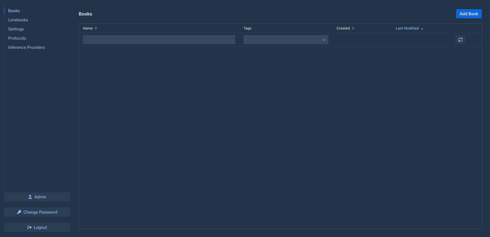

User guide
This part of the manual is for people who write with Marginalia and for those who run it for others. It explains every screen and setting, from installing Marginalia and connecting a model to branching a story, building a lorebook and backing up the database. You don't need to know anything about programming; a few pages about templates go deeper for those who want to fine-tune what is sent to the model.
If you are new, start with Getting started – it takes you from installation to the first generated part of a book in a few minutes.
How Marginalia works
You write a story together with a large language model. For each part of the story you say what should happen - the scene, whose point of view, who is present, a few sentences of instructions - and the model writes the prose. Before every part Marginalia builds the prompt for the model from:
flowchart LR
instr["Your instructions<br/>for the next part"] --> prompt
story["The story so far<br/>(active branch)"] --> prompt
sum["Summaries<br/>of older parts"] --> prompt
lore["Lorebook entries<br/>relevant now"] --> prompt
\style["Book prompts<br/>POV, tense, style"] --> prompt
prompt["Prompt<br/>(templates)"] --> model["Model<br/>(inference provider + protocol)"]
model --> part["New part"]Everything in this picture can be adjusted, and the user guide is organized along it.
Core concepts
Everything you create belongs to your account. Other users of the same Marginalia don't see your books, lorebooks, providers or settings - only books you choose to publish.
The workspace
After logging in you see the workspace. The tabs on the left are the main areas of Marginalia:

At the bottom are Change Password, Logout and, for administrators, Admin. Extensions may add more tabs and buttons.
Sections of this guide
Conventions
-
Names of tabs, buttons and fields are in bold or italics, written as they appear in Marginalia, e.g. Admin → Users.
-
~/.marginaliais the data folder in your home directory (%USERPROFILE%\.marginaliaon Windows); on a Docker server it is the./datafolder next todocker-compose.yml. -
Most changes are saved as soon as you make them. The exception is the Settings tab, which has a Save button.